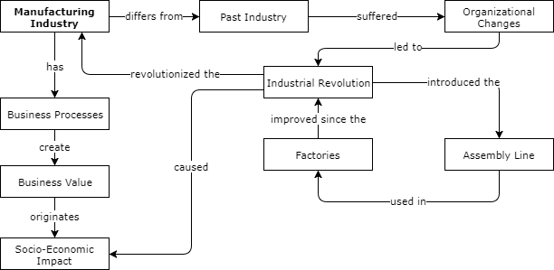
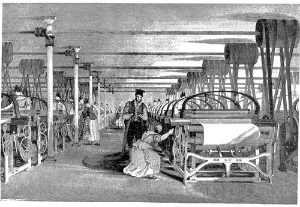
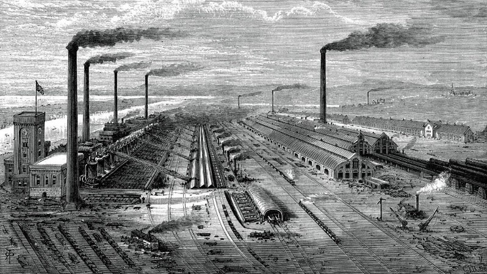
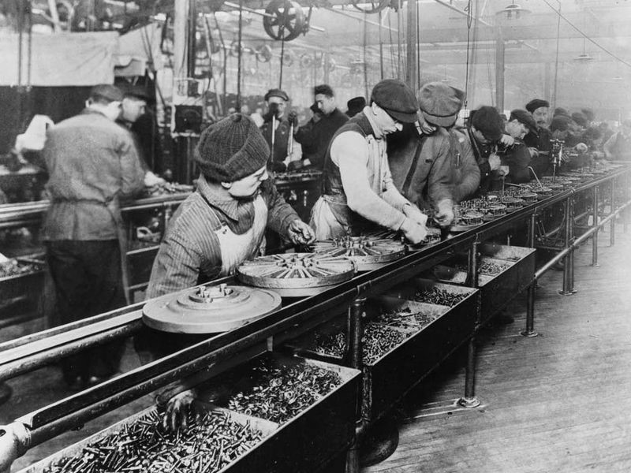

by Diogo Landeiro 76273 João Peralta 77997
Manufacturing industry refers to the industries that are involved in the manufacturing and processing of items and create new commodities to generate business value. The final products can either serve as a finished good for sale to customers or as intermediate goods used in other production processes. The production process comprises different business processes.
In the past, factories produced goods by hand with simple tools or with water-powered machines. The process was carried manually, only with the help of a simple machine that works with human effort. During the course of history people have changed the manufacturing process dramatically. Instead of producing goods by hand, the owners of the facilities created ways to use machines in the production process.
The assembly line was introduced to the manufacturing process in the Industrial Revolution that began in England in the 18th century and ultimately reached France and Germany, and by the late 18th century came across the sea to the United States. By 1750, a large amount of products were being exchanged among the European nations, and there was a demand for more goods than were being produced. England was the leading commercial nation, and the manufacture of cloth was its leading industry.
The assembly line allowed products to be sent from station to station to be made in stages, with each worker contributing work to a product's completion. This caused a lot of organizational changes in the factories, leading to significant socio-economic impacts. Due to the economic impact caused by the production of goods, more people (stakeholders) started to get interest in the manufacturing industry.
The most important of the changes that brought about the Industrial Revolution were: the invention of machines to do the work of hand tools; the use of steam, and later of other kinds of power, instead of human beings and of animals; and the adoption of the factory system.
Concepts Definition
Manufacturing Industry - Industries that are involved in the manufacturing and processing of items and indulge in either creation of new commodities to create value.
Past Industry - (Industry in the) past when factories produced goods that were produced by hand with simple tools or with water-powered machines.
Organizational Changes - Reviewing and modifying management structures and business processes in order to adapt the business to the new changes.
Industrial Revolution - The rapid development of industry that occurred in Britain in the late 18th and 19th centuries, brought by the introduction of machinery.
Assembly Line - A series of workers and machines in a factory by which a succession of identical items is progressively assembled.
Factories - Set of logically related tasks and behaviours that organizations develop over time to produce specific business results and the unique manner in which these activities are organized and coordinated.
Business Value - Term that includes all forms of value that determine the health and well-being of the firm in the long run.
Socio-Economic Impact - Field of study that examines social and economic factors to better understand how the combination of both influences something.